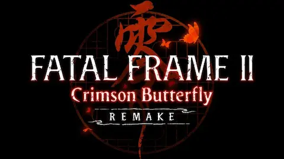

Si hay un juego que definió el terror japonés en la PS2, ese fue Fatal Frame II: Crimson Butterfly. El 12 de marzo de 2026 llega el remake completo a PS5, Xbox Series X/S, Nintendo Switch 2 y PC, con gráficos renovados desde cero pero manteniendo toda la esencia del original de 2003.
El juego sigue a las gemelas Mio y Mayu Amakura atrapadas en una aldea maldita donde los fantasmas solo pueden ser vencidos fotografiándolos con la Camera Obscura. El remake conserva la estructura original pero actualiza modelos de personajes, iluminación y controles, sin perder ni un gramo del terror psicológico que lo hizo legendario.
Para los fans del terror de la era PS2 —esa época dorada que también incluía Silent Hill 2 y el Resident Evil 4 original— este remake es una celebración y una prueba de que el terror japonés nunca fue sustituido, solo aletargado. El State of Play de febrero 2026 confirmó también remakes de la trilogía original de God of War, dejando claro que la nostalgia de los 2000s está más viva que nunca.